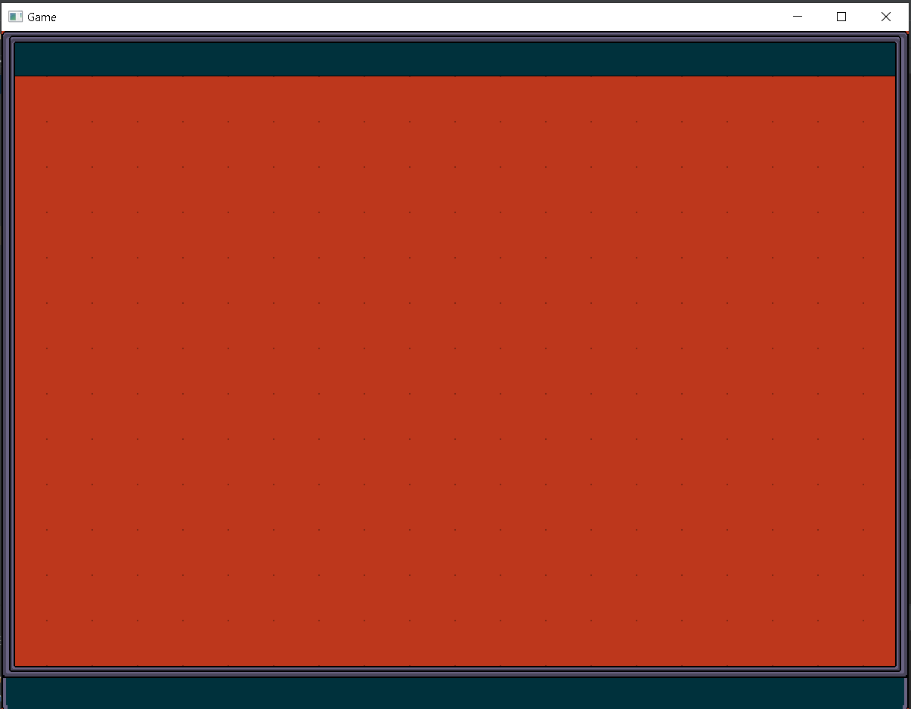

Welcome to Our Group
Game Plan
Game Based Around: Binding of IssacTexture Around: JetPack Joyride
There are many maps and each map has two doors.
When you go through a door, you go to a new map.
The map has 1 unique door which goes to another unexplored map or you can go through the door which you came from.
Make a labyrith with the doors, where the player has to go through doors, to find the exit or the end boss.
Diary
This will be a diary of progression of our 2D animation gameSession 1 - Start
We spent majority of the time working on the webpage instead of focusing on the game.Session 2 - Coding
We finally started working on the code. We created the map on Tiled and displayed it in our game.
Session 3 - Movement